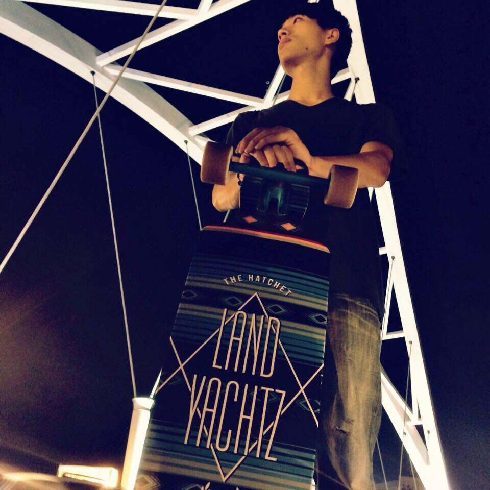
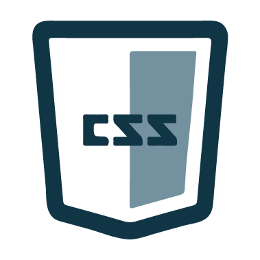
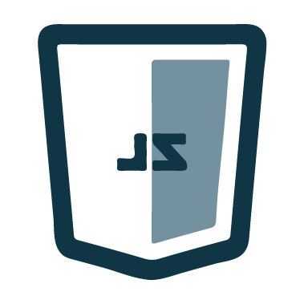
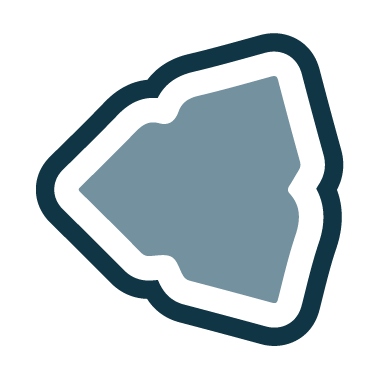

About

Profile
我是一個熱愛前端領域技術的開發者，著迷於開發美妙體驗的使用者介面，沉醉於程式碼的優雅。 對於更新迭代速度驚人的前端技術感到興奮，樂於嘗試新的解決方案。從校園課堂作業到小型專案， 一路來到接案、實習、更多接案的路程，希望未來與更多高手切磋，不只前端甚至繼續探索其他WEB技術領域! 除了前端，我同時是個熱愛籃球、長板、電吉他的人。
Education
2013 - 2015 國立高雄大學資管系碩士
2009 - 2013 國立高雄大學資管系
2006 - 2009 國立台中第二高級中學
Experience
2015 - 2016 移民署台北市專勤隊, 替代役管理幹部
2014 - 2015 國立高雄大學資訊管理學系, 前端網頁開發課程助教
2014 07 - 09 網絡行動科技, 網頁工程暑期實習生
Research Fields
碩士論文題目為「整合社群網站資訊與情緒標籤於音樂推薦系統之研究」，主要透過使用者的facebook 資料進行分析並結合情緒標籤分析音樂曲風特性，建置音樂推薦系統。對於串接API、爬蟲撰寫以及推薦系統等技術 有所涉獵。論文發表於MISNC 2015與KMO 2016國際研討會。
Skills
程式語言
HTML

CSS

Javascript
PHP
函式庫 & 框架
jQuery
Bootstrap
SASS
React.js
其他
C
Drupal
